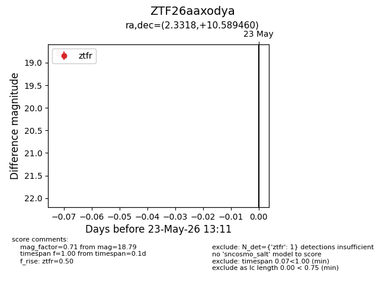
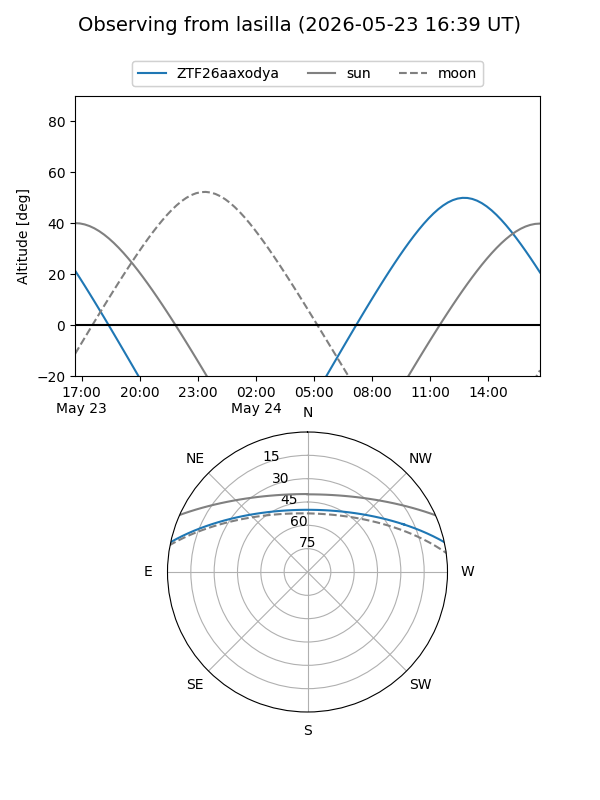
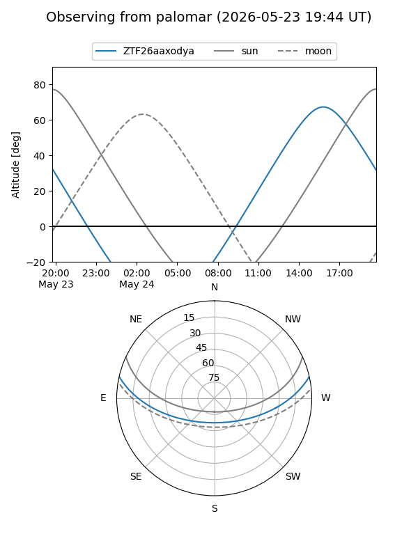

ZTF26aaxodya
Target ZTF26aaxodya at 2026-05-23 13:13
Aliases and brokers:
lsst-FINK: link
lsst-Lasair: link
lsst-ALeRCE: link
ztf-FINK: link
ztf-Lasair: link
ztf-ALeRCE: link
alt names
ZTF26aaxodya (ztf,fink_ztf)
Coordinates:
equatorial (ra, dec) = 2.3318,+10.58946
equatorial (HMS+DMS) = 00:09:19.64,+10:35:22.06
galactic (l, b) = (106.3781,-50.92380)
Flags:
Photometry:
last ztfr=18.79
1 ztfr detections
Lightcurve

Visibility


Additional plots